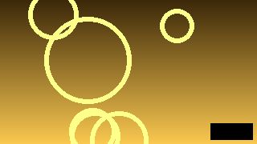

<!doctype html>
<html lang="en">
<meta charset="utf-8">
<title>The bloom from the air - Fixture Video</title>
<!-- Written for Noctiluca's corpus: a video watch page. A player with a
     poster, the channel's avatar and name, a grid of video thumbnails with
     their titles under them, and a compact comment list. Every picture is
     the fixture's own (media/make.py); the video is the PoC's motion.webm. -->
<style>
  body { font: 16px/1.4 sans-serif; margin: 0 8px; color: #111; }
  header { display: flex; gap: 16px; align-items: center; border-bottom: 1px solid #ccc; padding: 4px 0; }
  video { display: block; width: 480px; height: 270px; background: #000; }
  .channel { display: flex; gap: 16px; align-items: center; }
  .channel img { width: 32px; height: 32px; border-radius: 50%; }
  .grid { display: grid; grid-template-columns: repeat(auto-fill, minmax(176px, 1fr)); gap: 12px; }
  .grid img { display: block; width: 176px; height: 99px; object-fit: cover; }
  .grid h3 { font-size: 15px; margin: 4px 0 0; }
  .grid p { margin: 0; color: #666; font-size: 13px; }
  .comments { list-style: none; padding: 0; margin: 0; }
  .comments li { display: flex; gap: 8px; align-items: flex-start; font-size: 14px; margin: 2px 0; }
  .comments img { width: 18px; height: 18px; border-radius: 50%; }
  .comments b { margin-right: 6px; }
</style>
<header>
  <a href="media-grid.html"><b>Fixture Video</b></a>
  <form action="echo.html"><input type="search" name="q" aria-label="Search videos" placeholder="Search"> <button>Search</button></form>
</header>
<main>
  <video src="media/motion.webm" poster="media/poster.jpg" width="480" height="270" controls aria-label="The bloom from the air"></video>
  <h1>The bloom from the air</h1>
  <div class="channel">
    
    <a href="media-grid.html"><b>Sea Light</b></a>
    <span>12K subscribers</span>
    <button>Subscribe</button>
    <button aria-label="Like this video">👍 2.1K</button>
    <button aria-label="Share">↗</button>
  </div>
  <h2>Up next</h2>
  <div class="grid">
    <div><h3><a href="media-grid.html">Night dive with the glowing plankton</a></h3><p>Sea Light · 48K views</p></div>
    <div><h3><a href="media-grid.html">Sunset over the coast, 4 hours</a></h3><p>Slow Coast · 9K views</p></div>
    <div><h3><a href="media-grid.html">How bioluminescence works</a></h3><p>Lab Notes · 120K views</p></div>
    <div><h3><a href="media-grid.html">Harbour time-lapse</a></h3><p>Sea Light · 3K views</p></div>
  </div>
  <h2>3 comments</h2>
  <ul class="comments" aria-label="Comments">
    <li><span><b>Marta</b>I saw this from the pier last night, unreal.</span></li>
    <li><span><b>Jo</b>What camera was this shot on?</span></li>
    <li><span><b>Sam</b>The bit at 0:04 is my favourite.</span></li>
  </ul>
</main>
</html>
